spax-samorezy
69 типов изделий в категории.
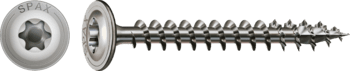
Cтроительный нержавеющий cаморез по дереву с прессшайбой 8 мм

Конструкционные саморезы SPAX
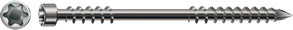
Нержавеющие саморезы SPAX для крепления террасных досок
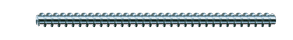
Резьбовой стержень SPAX
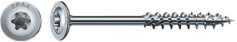
Саморез 10 мм конструкционный с неполной резьбой по дереву
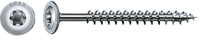
Саморез 10 мм конструкционный с полной резьбой по дереву

Саморез 10 мм с неполной резьбой по дереву
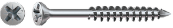
Саморез 3.5х40 нержавеющий для деревянных штапиков

Саморез 4 мм FEX для оконной фурнитуры
Саморез 4.2х35 для оконного профиля со сверлом FEX KOMBI

Саморез 4х45 нержавеющий по дереву для окон

Саморез 6 мм нержавеющий по дереву для террасной доски
Саморез 6 мм с неполной резьбой для деревянных конструкций

Саморез 6 мм с полной резьбой для деревянных конструкций

Саморез 7х35 мм со скобой для забора

Саморез 8 мм по дереву для бруса
Саморез 8 мм с неполной резьбой для обрешётки
Саморез 8 мм с полной резьбой для деревянных конструкций

Саморез 8х50 мм SPAX по дереву для стоек, фурнитуры

Саморез SPAX 3 мм для мебельной фурнитуры
Саморез SPAX 3 мм по дереву для крепления рояльных петель

Саморез декоративный по дереву PZ

Саморез декоративный по дереву с полупотайной головкой

Саморез декоративный с полупотайной головкой, нержавеющая сталь
Саморез для жалюзи FEX-RS

Саморез для крепления ОСБ, ДСП, фанеры к полу

Саморез для крепления фитингов и фурнитуры по дереву
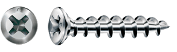
Саморез для фурнитуры окон FEX-KS

Саморез для штапика по дереву 3.5х40 SPAX
Саморез жёлтый универсальный по дереву с неполной резьбой

Саморез нержавеющий 5 мм для террасной доски

Саморез нержавеющий 6 мм по дереву для бруса
Саморез нержавеющий с потайной головкой и неполной резьбой

Саморез нержавеющий с потайной головкой и полной резьбой по дереву
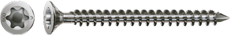
Саморез нержавеющий усиленный по дереву 10, 12 мм

Саморез по дереву 8 мм SPAX для деревянных конструкций
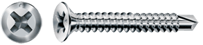
Саморез по металлу со сверлом с потайной головкой FEX-А

Саморез с полной резьбой для фурнитуры и фитингов

Саморез с прессшайбой острый по дереву SPAX

Саморез с шестигранной головкой по дереву SPAX
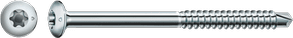
Саморез соединительный 5.5 мм FEX со сверлом для профилей окон

Саморез универсальный жёлтый цинк по дереву с полной резьбой

Саморез универсальный красный с полной резьбой по дереву
Саморез универсальный оцинкованный по дереву с потайной головкой
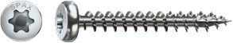
Саморез универсальный по дереву из нержавеющей стали
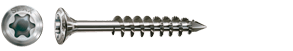
Саморез фасадный со сверлом для фасадной доски 4.5, 5 мм
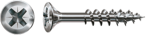
Саморез фурнитурный 4 мм FEX-H с потайной головкой со шлицем PZ
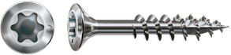
Саморез фурнитурный FEX-H с потайной головкой со шлицем T-STAR plus
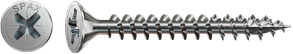
Саморезы 3 - 6 мм из нержавеющей стали с полной резьбой и потайной головкой PZ
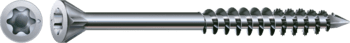
Саморезы 3.5 мм для пола

Саморезы 6 мм для соединения деталей из древесины
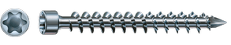
Саморезы 8 мм с цилиндрической головкой для деревянных конструкций

Саморезы SPAX-М для ОСБ, ДСП, МДФ панелей

Саморезы в бетонную стену для пластиковых окон SPAX-RA
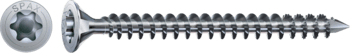
Саморезы длинные по дереву 8, 10 мм
Саморезы для крепления профилей, фурнитуры

Саморезы для профиля и фурнитуры

Саморезы конструкционные по дереву

Саморезы нержавеющие красные 5 мм для террасной доски

Саморезы нержавеющие с потайной головкой со шлицем PZ и неполной резьбой
Саморезы никелированные с полупотайной головкой и полной резьбой

Саморезы по бетону без дюбелей для деревянных рам SPAX-RA
Саморезы по дереву с неполной резьбой и потайной головкой со шлицем PZ

Саморезы по дереву универсальные с потайной головкой и неполной резьбой

Саморезы по дереву универсальные с потайной головкой и полной резьбой

Саморезы под пластиковые заглушки

Саморезы универсальные желтые с потайной головкой 2 - 6 мм
Саморезы универсальные жёлтые потай по дереву